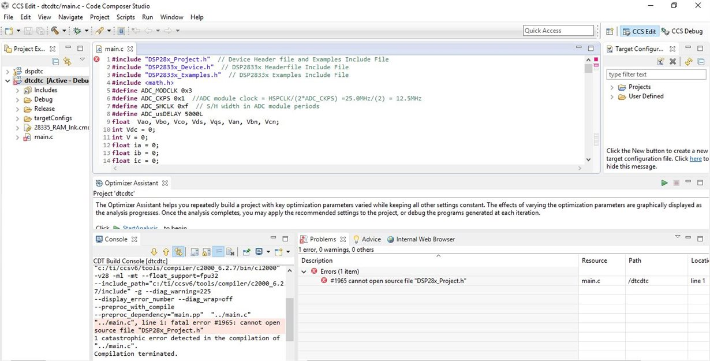
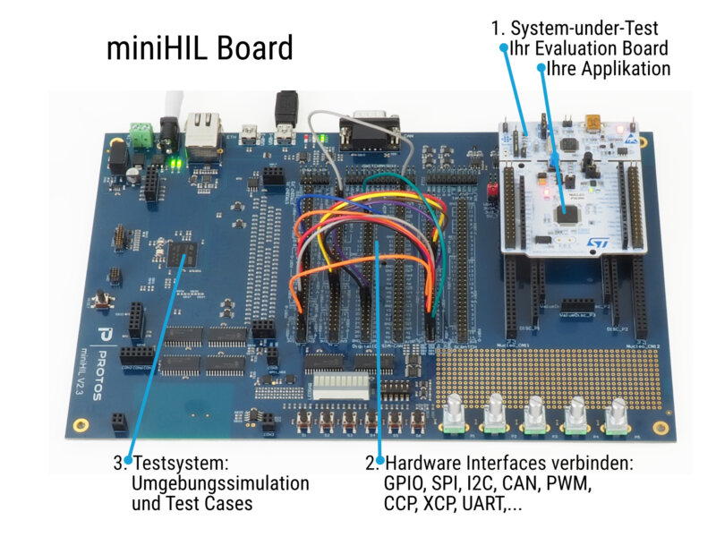
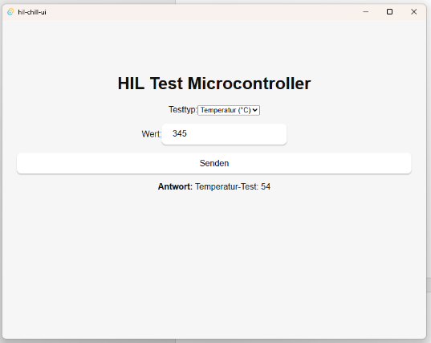

Das ist ein Tool, das kontrolliert, ob bestimmte Regeln eingehalten werden. Es kontrolliert die Codequalität und schaut, dass der Code ein einheitlicher Stil hat.
Das, was als Fehler angezeigt wurde, habe ich dann im Code
verbessert. Dabei habe ich gelernt die Warnungen der Codeanalyse
zu verstehen
und auch den C-Code besser zu verstehen.

In meinem Betrieb arbeiten wir viel mit Mikrocontrollern. Um einen solchen zu testen, haben wir einen Mini-HIL programmiert. HIL steht für "Hardware-In-The-Loop" und bedeutet, dass die Hardware mit einem Gerät so getestet wird, als wäre sie bereits in einem Fahrzeug. Das Backend haben wir mit Rust programmiert und das Frontend mit HTML, CSS und JavaScript. Dabei habe ich viel über die Verknüpfung von Backend und Frontend gelernt.
Diesen Mini HIL haben wir programmiert, da es normalerweise grössere HILs gibt aber diese teuer sind und viel Ausstattung benötigen. Mit einem kleinen HIL ist es einfacher, das einzurichten. Dabei können Testdaten im Frontend eingegeben werden, die der HIL dann als Signale versendet. So kann man sehen, wie der Mikrocontroller darauf reagiert.

